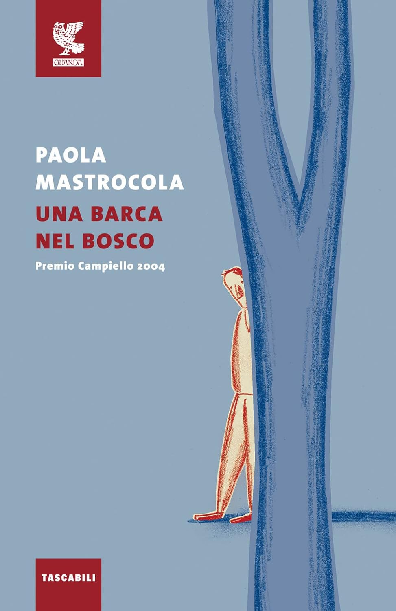

<!DOCTYPE html>
<html>

<head>
    <meta charset="utf-8">
    <title>HOMEWORK_1</title>
    <meta name="viewport" content="width=device-width, initial-scale=1">
    <link rel="stylesheet" href="./mhw1.css" />
</head>

</html>

<body>
    <header>

        <nav id="navbar">

            <div id="menu">

                <a>HOME</a> &nbsp;
                <a>CHI SONO?</a> &nbsp;
                <a>COSA LEGGO?</a>

            </div>

            <div id="menu_mobile">
                <div> </div>
                <div> </div>
                <div> </div>
            </div>


            <div id="social">
                <a></a>
                
                
                
                
            </div>
        </nav>


        <div id="icona">

            
            <h1>L come Leggere</h1>

        </div>

        <div id="box">

            <h2>Blog di Lucia Torrisi</h2>

        </div>


        <div id="barra"> </div>

    </header>

    <section id="flexcontainer">

        <div class="book">
            
            <a> Murakami dritto al cuore </a>
        </div>

        <div class="book">
            
            <a> Rebecca Yarros: la rivincita del romantasy </a>
        </div>

        <div class="book">
            
            <a> Un viaggio tra i luoghi della Sicilia </a>

        </div>

        <div class="book">
            
            <a> Caso editoriale dell'anno </a>
        </div>

        <div class="book">
            
            <a> Premio Nobel per la letteratura 2024 </a>
        </div>
    </section>


    <!-------------------------------------------------Prima Sezione-------------------------------------------------------------------------->


    <section id="flexcontainer1">
        <section id="sezione1">

            <div class="cornice">

                <div>
                    <a class="font" href="https://www.lcomeleggere.it"> - C come Consigli di lettura - </a>
                </div>

                <h1>
                    <a href="https://www.lcomeleggere.it/ilcontediMontecristo"> Il Conte di Montecristo </a>
                </h1>

                <div class="data">
                    <a href="https://www.lcomeleggere.it/ilcontediMontecristo"> 15 Marzo 2025 </a>
                </div>


                <div class="copertina">
                    <a href="https://www.lcomeleggere.it/ilcontediMontecristo">
                        
                    </a>
                </div>


                <div class="didascalia">
                    <p>Non una semplice vendetta ma LA VENDETTA: Edmond Dantès diventerà il Conte di Montecristo per
                        vendicarsi del male ricevuto.</p>
                </div>

                <div class="RM">
                    <a href="https://www.lcomeleggere.it/Read More"> READ MORE </a>
                </div>

            </div>

            <!-------------------------------------------------------------------------------------------------------------------------------->


            <div class="cornice">

                <div class="font">
                    <a href="https://www.lcomeleggere.it"> - C come Consigli di lettura - </a>
                </div>

                <h1>
                    <a href="https://www.lcomeleggere.it/I-Leoni-di-Sicilia"> I Leoni di Sicilia </a>
                </h1>

                <div class="data">
                    <a href="https://www.lcomeleggere.it/I-Leoni-di-Sicilia"> 17 Marzo 2025 </a>
                </div>


                <div class="copertina">
                    <a href="https://www.lcomeleggere.it/I-Leoni-di-Sicilia">
                        
                    </a>
                </div>


                <div class="didascalia">
                    <p>Una storia di passioni, ambizioni, voglia di riscatto e tenerezza nella Sicilia dell'Ottocento
                    </p>
                </div>

                <div class="RM">
                    <a href="https://www.lcomeleggere.it/Read More"> READ MORE </a>
                </div>

            </div>


            <!-------------------------------------------------------------------------------------------------------------------------->


            <div class="cornice">

                <div class="font">
                    <a href="https://www.lcomeleggere.it"> - C come Consigli di lettura - </a>
                </div>

                <h1>
                    <a href="https://www.lcomeleggere.it/una-barca-nel-bosco"> Una barca nel bosco </a>
                </h1>

                <div class="data">
                    <a href="https://www.lcomeleggere.it/una-barca-nel-bosco"> 19 Marzo 2025 </a>
                </div>


                <div class="copertina">
                    <a href="https://www.lcomeleggere.it/una-barca-nel-bosco">
                        
                    </a>
                </div>


                <div class="didascalia">
                    <p>Le illusioni e disillusioni nella scuola di oggi di uno studente a cui era stato
                        detto dai suoi genitori che al liceo sarebbe stata molto dura...
                        spiega che nella vita bisogna lavorare per ottenere e non solo, spiega anche la mentalità dei
                        ragazzi,
                        dei docenti e del sistema scolastico di oggi fino all'università.</p>
                </div>

                <div class="RM">
                    <a href="https://www.lcomeleggere.it/Read More"> READ MORE </a>
                </div>

            </div>

            <!------------------------------------------------------------------------------------------------------------------------------->


            <div class="cornice">

                <div class="font">
                    <a href="https://www.lcomeleggere.it"> - C come Consigli di lettura - </a>
                </div>

                <h1>
                    <a href="https://www.lcomeleggere.it/l'avversario"> L'Avversario</a>
                </h1>

                <div class="data">
                    <a href="https://www.lcomeleggere.it/l'avversario"> 22 Marzo 2025 </a>
                </div>


                <div class="copertina">
                    <a href="https://www.lcomeleggere.it/l'avversario">
                        
                    </a>
                </div>


                <div class="didascalia">
                    <p>Un libro che scava a fondo negli abissi oscuri dell'animo umano.
                        Una storia agghiacciante e incredibile.
                        "L'Avversario" di Emmanuel Carrère è un libro che sfida le convenzioni letterarie e
                        psicologiche,
                        portando i lettori in un viaggio inquietante attraverso le profondità della mente umana.
                        Basato su eventi reali, Carrère dipinge un ritratto disturbante e complesso di Jean-Claude
                        Romand,
                        un uomo che ha vissuto una doppia vita per più di due decenni.</p>
                </div>

                <div class="RM">
                    <a href="https://www.lcomeleggere.it/Read More"> READ MORE </a>
                </div>
            </div>


            <div class="cornice">
                <a href="https://www.lcomeleggere.it"> Articoli meno recenti </a>
            </div>


        </section>


        <!-------------------------------------------------Seconda Sezione--------------------------------------------------------------->


        <section id="sezione2">

            <div class="cornice2">

               <div id="bio">

                        <div class="overlay"> Lucia </div>

                            
                </div>

            </div>

            <div class="cornice2">
                <h1>Categorie</h1>
                <form action="https://www.lcomeleggere.it" method="get">
                    <label for="categ"></label>
                    <select name='categ'>
                        <option value='0'>Seleziona una categoria</option>
                        <option value="1">C come Consigli di lettura</option>
                        <option value="2">Recensioni</option>
                    </select>
                </form>
            </div>

            <div class="cornice2">
                <h1>Ricerca sul blog</h1>
                <form role="search" method="get" action="https://www.lcomeleggere.it/">
                    <label>
                        <span">Ricerca per:</span><br />
                            <input type="search" class="search-field" placeholder="Cerca &hellip;" value="" name="s" />
                    </label>

                    <input type="submit" class="search-submit" value="Cerca" />
                </form>
            </div>


            <div class="cornice2">
                <h1>Archivio</h1>
                <label for="archivio"></label>
                <select name="archivio">

                    <option value="">Seleziona mese</option>
                    <option value='https://www.lcomeleggere.it/2025/01/'> Gennaio 2025 </option>
                    <option value='https://www.lcomelibro.it/2025/02/'> Febbraio 2025 </option>
                </select>
            </div>

        </section>
    </section>


    <footer id="foot">
        <a>
            <p> Cittadella Universitaria - Catania <br />
                Powered by Lucia </p>
        </a>


    </footer>


</body>